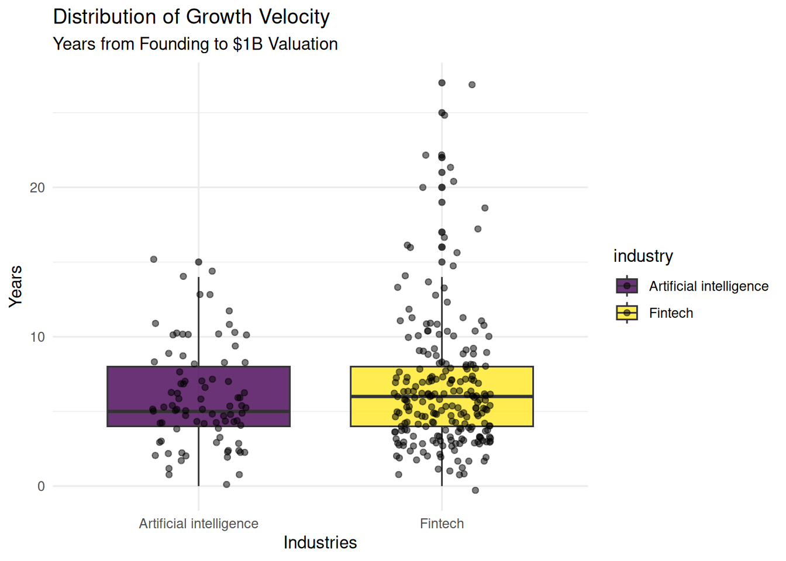
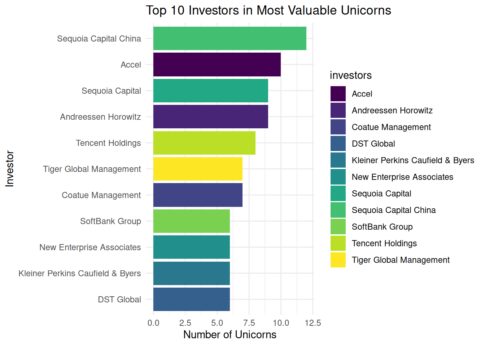
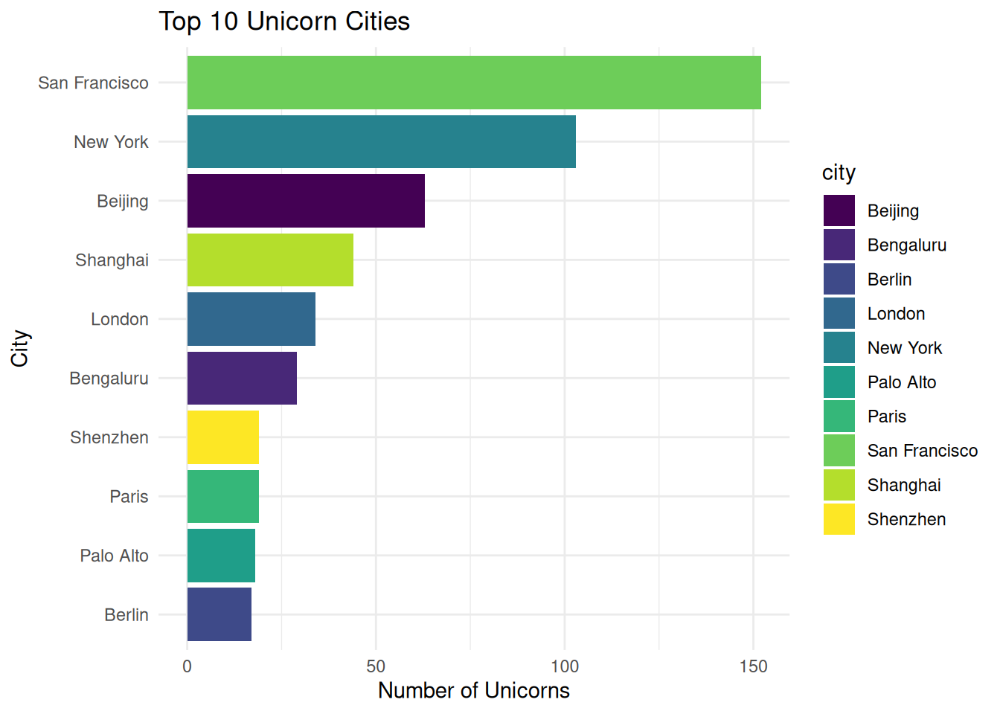
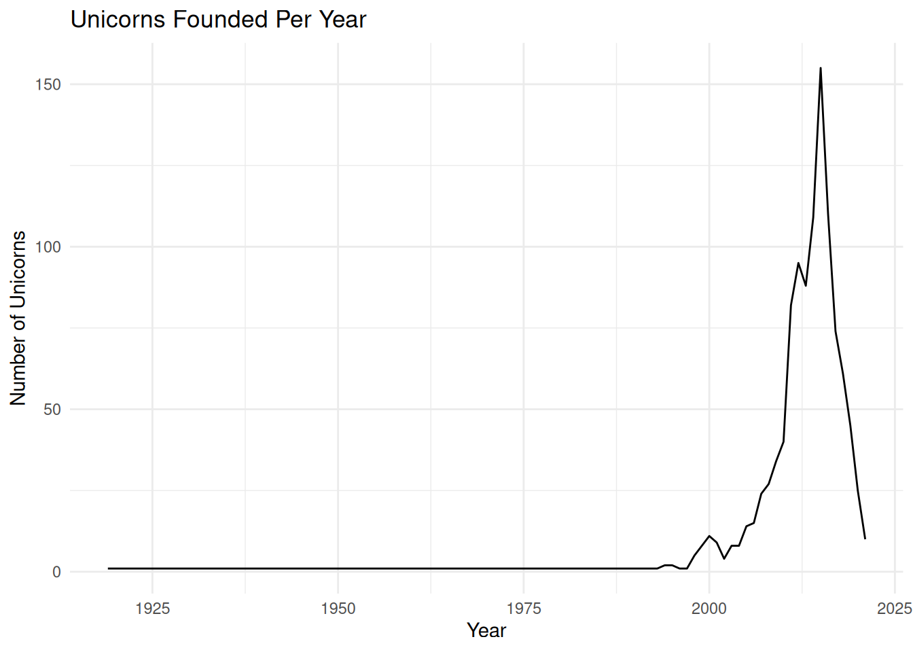
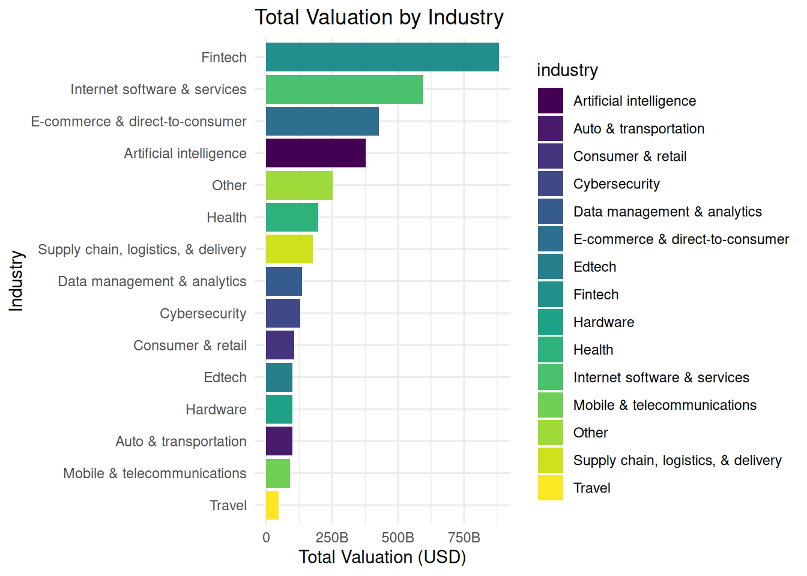
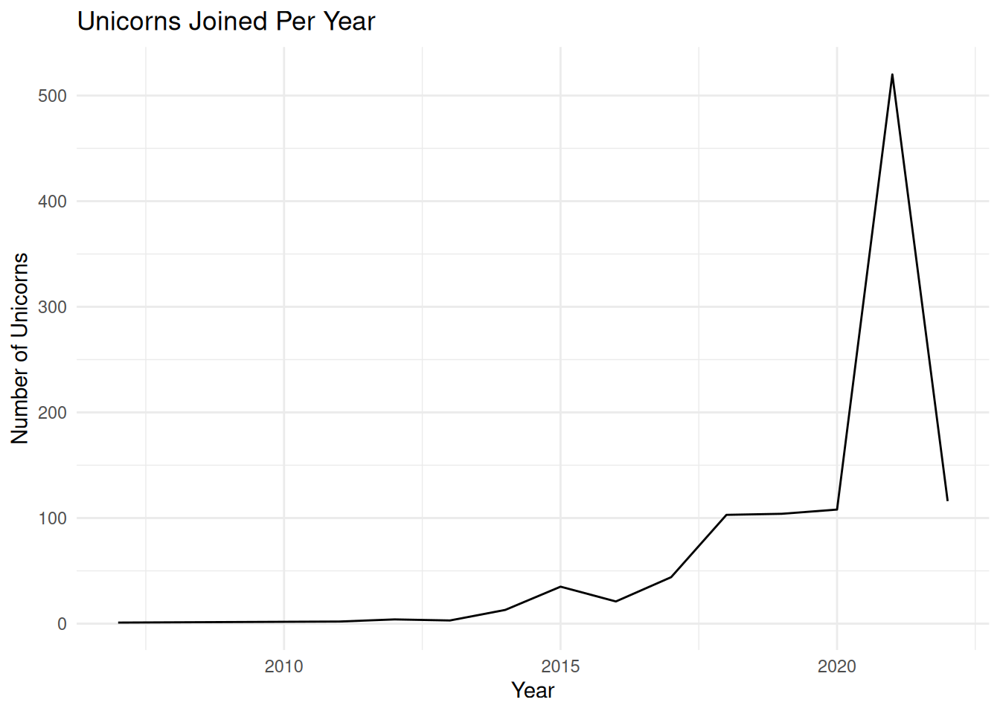
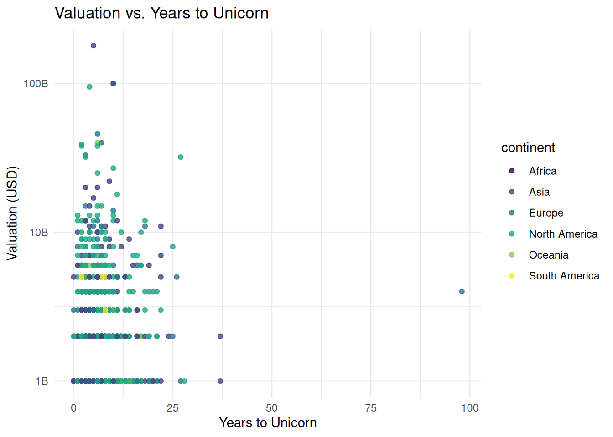

library(tidyverse)
library(scales)
library(knitr)
library(viridis)
library(maps)
library(tidygeocoder)Chasing Billions: The Global Unicorn Landscape
The Business Problem
A Venture Capital (VC) firm wants to identify “efficient” unicorns (reaching $1B in <5 years) outside Silicon Valley to find underserved, high-growth markets.
Analytical Pipeline (Tech Stack)
- Excel: Data entry, validation, and complex string manipulation to convert string values like
$8Binto integer values. - SQL: Structured querying and aggregation of the 1000+ company dataset.
- R: Converting data from wide to long format, statistical analysis and R Markdown reporting.
- Tableau: [Link to Dashboard] Interactive visualization of investor networks.
Key Performance Indicators (KPIs)
- Speed to Unicorn: Years from foundation to $1B+
- Capital Efficiency Ratio: Valuation \(\div\) Total Funding.
- Elite Investors: Investors with stakes in the top 10% most efficient startups.
- Market Saturation: Density of unicorns per city/industry.
Data Integrity & Cleaning
- Currency Normalization: Converted mixed-string funding
($B/$M)into integers for calculation. - Investor Parsing: Created a “long” version of the data (where one company has multiple rows, one for each investor) using R & the
tidyverse()package. - Spatial Correction: Imputed missing city data for Singapore, Hong Kong and Bahamas entities.
- Outlier Handling: Addressed data entry errors (e.g., founded dates listed after join dates).
Limitations & Assumptions
- Survival Bias: Data excludes companies that have already exited via IPO or Acquisition.
- Founding Date Assumption: Companies are assumed to be founded on Jan 1st of their founding year for time-series calculations.
Data Source
- Dataset: Unicorn Companies Global Valuations
- Platform: Kaggle
- Author: Adil Shamim
- Description: This dataset provides a comprehensive list of “Unicorn” companies (private companies valued at over $1 billion). It includes key metrics such as current valuation, total funding raised, industry sector, headquarters location (City, Country, Continent), the year the company was founded, and the names of primary investors.
- Citation: Shamim, A. (2024). Startup growth and investment data [Data set]. Kaggle. https://www.kaggle.com/datasets/adilshamim8/startup-growth-and-investment-data
Phase 1: Data Engineering & Pre-processing (Excel/R)
Goal: Perform heavy-duty aggregation and multi-dimensional filtering.
Currency Normalization: Used the following Excel formula to convert shorthand ($8B, $200M) into long-form integers:
IF(RIGHT(B2,1)="B", SUBSTITUTE(SUBSTITUTE(B2,"$",""),"B","")*1000000000, IF(RIGHT(B2,1)="M", SUBSTITUTE(SUBSTITUTE(B2,"$",""),"M","")*1000000, SUBSTITUTE(B2,"$","")*1))Date Standardization: Converted all dates into the
YYYY-MM-DDformatData Integrity Check:
Identified and fixed outliers in the date columns where
Year Founded>Date Joinedusing theDATEDIFfunction.Imputed missing values (like the Singapore,Hong Kong and Bahamas city gap).
Data Transformation (Wide to Long): Created another dataset containing only company and investor columns by converting the wide data into long format using the following R script:
# Load the necessary libraries
library(tidyverse)
(readr)
# Read the data
df <- read_csv("dataset_long_temp.csv")
# Convert from wide to long
df_long <- df %>%
separate_rows(investors, sep = ",") %>%
mutate(investors = str_trim(investors))
# View result
view(df_long)
# Save the file
readr::write_csv(df_long, "dataset_long.csv")- Final Export: Generated two cleaned
.csvfiles to be used in all subsequent tools.
Phase 2: Database Management & SQL Analysis
Goal: Establish the baseline metrics.
Schema Design: Imported the cleaned data into MySQL with appropriate data types.
The “Efficiency” Query: Performed the following SQL query to filter the companies that reached Unicorn status within 5 years:
SELECT company, years_to_unicorn
FROM (
SELECT
company,
YEAR(date_joined) - YEAR(year_founded) AS years_to_unicorn
FROM dataset
GROUP BY company, years_to_unicorn
) AS yu
WHERE years_to_unicorn <= 5
ORDER BY years_to_unicorn;- Geographic Grouping: Performed the following query to find the
Average Valuationper startup per country:
SELECT
country,
avg(valuation) AS average_valuation
FROM dataset
GROUP BY country
ORDER BY average_valuation DESC;- Investor Counting: Wrote the following query to identify which specific investors appear most frequently in the “Top 10%” of the most efficient startups:
WITH enriched AS (
SELECT
company,
investors,
YEAR(date_joined) - YEAR(year_founded) AS years_to_unicorn
FROM dataset_long
WHERE YEAR(date_joined) - YEAR(year_founded) <= 5
),
ranked AS (
SELECT
company,
investors,
years_to_unicorn,
NTILE(10) OVER (ORDER BY years_to_unicorn) AS decile
FROM enriched
)
SELECT
investors,
COUNT(*) AS companies_invested
FROM ranked
WHERE decile = 1
GROUP BY investors
ORDER BY companies_invested DESC;- Top valued industries: Identified industries with the highest company valuations.
SELECT
industry,
SUM(valuation) AS total_valuation
FROM dataset
GROUP BY industry;Phase 3: Statistical Discovery & Advanced EDA (R)
Load the necessary libraries.
Custom formatting function for large numbers
dollar_format_big <- function(x) {
ifelse(x >= 1e9, paste0(x / 1e9, "B"),
ifelse(x >= 1e6, paste0(x / 1e6, "M"),
ifelse(x >= 1e3, paste0(x / 1e3, "K"), x)))
}Load the CSV file.
Note on Granularity: Company-level metrics are derived solely from the primary dataset (dataset.csv). The long-format dataset (dataset_long.csv) is reserved for investor analysis only, as using it for general statistics would skew valuation and funding totals due to record duplication across multiple investors.
data <- read_csv("dataset.csv")Rows: 1074 Columns: 11
── Column specification ────────────────────────────────────────────────────────
Delimiter: ","
chr (6): company, industry, city, country, continent, investors
dbl (3): company_id, valuation, funding
date (2): year_founded, date_joined
ℹ Use `spec()` to retrieve the full column specification for this data.
ℹ Specify the column types or set `show_col_types = FALSE` to quiet this message.Identify the structure of the dataset.
glimpse(data)Rows: 1,074
Columns: 11
$ company_id <dbl> 10001, 10002, 10003, 10004, 10005, 10006, 10007, 10008, 1…
$ company <chr> "Bytedance", "SpaceX", "SHEIN", "Stripe", "Klarna", "Canv…
$ valuation <dbl> 1.8e+11, 1.0e+11, 1.0e+11, 9.5e+10, 4.6e+10, 4.0e+10, 4.0…
$ year_founded <date> 2012-01-01, 2002-01-01, 2008-01-01, 2010-01-01, 2005-01-…
$ date_joined <date> 2017-04-07, 2012-12-01, 2018-07-03, 2014-01-23, 2011-12-…
$ industry <chr> "Artificial intelligence", "Other", "E-commerce & direct-…
$ city <chr> "Beijing", "Hawthorne", "Shenzhen", "San Francisco", "Sto…
$ country <chr> "China", "United States", "China", "United States", "Swed…
$ continent <chr> "Asia", "North America", "Asia", "North America", "Europe…
$ funding <dbl> 8.00e+09, 7.00e+09, 2.00e+09, 2.00e+09, 4.00e+09, 5.72e+0…
$ investors <chr> "Sequoia Capital China, SIG Asia Investments, Sina Weibo,…With the glipse() functions we can see that all the columns are in the appropritate format.
Calculating Time to Unicorn Status
data <- data %>%
mutate(
years_to_unicorn = year(date_joined) - year(year_founded)
)Now lets look at the dataset again
glimpse(data)Rows: 1,074
Columns: 12
$ company_id <dbl> 10001, 10002, 10003, 10004, 10005, 10006, 10007, 1000…
$ company <chr> "Bytedance", "SpaceX", "SHEIN", "Stripe", "Klarna", "…
$ valuation <dbl> 1.8e+11, 1.0e+11, 1.0e+11, 9.5e+10, 4.6e+10, 4.0e+10,…
$ year_founded <date> 2012-01-01, 2002-01-01, 2008-01-01, 2010-01-01, 2005…
$ date_joined <date> 2017-04-07, 2012-12-01, 2018-07-03, 2014-01-23, 2011…
$ industry <chr> "Artificial intelligence", "Other", "E-commerce & dir…
$ city <chr> "Beijing", "Hawthorne", "Shenzhen", "San Francisco", …
$ country <chr> "China", "United States", "China", "United States", "…
$ continent <chr> "Asia", "North America", "Asia", "North America", "Eu…
$ funding <dbl> 8.00e+09, 7.00e+09, 2.00e+09, 2.00e+09, 4.00e+09, 5.7…
$ investors <chr> "Sequoia Capital China, SIG Asia Investments, Sina We…
$ years_to_unicorn <dbl> 5, 10, 10, 4, 6, 6, 7, 2, 2, 6, 3, 27, 3, 10, 6, 9, 6…The years_to_unicorn column has been successfully added to the dataset.
Distribution Analysis
First calculate the mean and median values of the years_to_unicorn column.
mean_val <- mean(data$years_to_unicorn)
median_val <- median(data$years_to_unicorn)print(mean_val)[1] 7.00838print(median_val)[1] 6Visualise the distribution of years_to_unicorn.
ggplot(data, aes(x = years_to_unicorn, y = after_stat(density))) +
geom_histogram(
fill = "grey70",
colour = "white",
bins = 50,
alpha = 0.8
) +
geom_density(
colour = "#404080"
) +
geom_vline(
xintercept = mean_val,
colour = "#D55E00",
linetype = "dashed"
) +
geom_vline(
xintercept = median_val,
colour = "#0072B2",
linetype = "dashed"
) +
annotate(
"text",
x = 12,
y = 0.1,
label = "Mean",
colour = "red",
) +
annotate(
"text",
x = 2,
y = 0.1,
label = "Median",
colour = "blue"
) +
labs(
title = "Distribution of Years to Reach Unicorn Status",
subtitle = paste0("Analysis of ~1,000 Global Startups. Mean: ", round(mean_val, 2), ", Median: ", round(median_val, 2)),
x = "Years to $1B valuation",
y = "Density"
) +
theme_minimal() +
xlim(0,50)
Correlation Testing
First calculate the Pearson and Spearman correlation coefficients between funding and valuation.
pearson_val <- cor(
data$funding,
data$valuation,
use = "complete.obs",
method = "pearson"
)
spearman_val <- cor(
data$funding,
data$valuation,
use = "complete.obs",
method = "spearman"
)print(paste("Pearson correlation: ", pearson_val))[1] "Pearson correlation: 0.598558125844104"print(paste("Spearman correlation: ", spearman_val))[1] "Spearman correlation: 0.589093712309611"Visualising the correlation between valuation and funding.
ggplot(data, aes(x = funding, y = valuation, color = industry)) +
geom_point(
alpha = 0.8,
na.rm = TRUE
) +
geom_smooth(
method = "lm",
na.rm = TRUE,
colour = "darkred"
) +
scale_x_log10(
labels = label_number(scale_cut = cut_short_scale())
) +
scale_y_log10(
labels = label_number(scale_cut = cut_short_scale())
) +
scale_color_viridis(discrete = TRUE) +
labs(
title = "Correlation: Total Funding vs. Valuation",
x = "Total Funding (USD)",
y = "Current Valuation (USD)",
caption = "Note: Axes are on a Logarithmic scale for better visibility."
) +
theme_minimal()
Industry Deep-Dive:
Created a temporary dataset restricted to the “Artificial Intelligence” and “Fintech” industries to enable focused, side-by-side comparative analysis of valuation and funding characteristics.
comparison_data <- data %>%
filter(industry %in% c("Artificial intelligence", "Fintech"))Create a summary statistics table:
comparison_stats <- comparison_data %>%
group_by(industry) %>%
summarise(
Company_Count = n(),
Avg_Years_to_Unicorn = mean(years_to_unicorn, na.rm = TRUE),
Median_Years_to_Unicorn = median(years_to_unicorn, na.rm = TRUE),
Avg_Funding_USD = mean(funding, na.rm = TRUE),
Median_Funding_USD = median(funding, na.rm = TRUE),
)View the summary table:
kable(
comparison_stats,
caption = "Statistical Profile: AI vs. Fintech"
)| industry | Company_Count | Avg_Years_to_Unicorn | Median_Years_to_Unicorn | Avg_Funding_USD | Median_Funding_USD |
|---|---|---|---|---|---|
| Artificial intelligence | 84 | 5.892857 | 5 | 557166667 | 302500000 |
| Fintech | 224 | 6.544643 | 6 | 486468468 | 370000000 |
Visualisation: Comparing the growth rate
ggplot(comparison_data, aes(x = industry, y = years_to_unicorn, fill = industry)) +
geom_boxplot(alpha = 0.8) +
geom_jitter(width = 0.2, alpha = 0.5) +
labs(title = "Distribution of Growth Velocity",
subtitle = "Years from Founding to $1B Valuation",
y = "Years", x = "Industries") +
theme_minimal() +
scale_fill_viridis(discrete = TRUE)
Visualisation: Funding Requirements (Mean Funding)
ggplot(comparison_stats,
aes(x = industry, y = Avg_Funding_USD, fill = industry)) +
geom_col() +
geom_errorbar(aes(ymin = Avg_Funding_USD - Median_Funding_USD, ymax = Avg_Funding_USD + Median_Funding_USD), width = 0.2) +
scale_y_continuous(
labels = label_number(scale_cut = cut_short_scale())
) +
labs(
title = "Average Capital Requirement",
y = "Average Funding Raised (USD)",
x = "Industries"
) +
theme_minimal() +
scale_fill_viridis(discrete = TRUE)
Geographic Analysis
Unicorn World Map
geocoded_file <- "geocoded_unicorns.csv"
if (file.exists(geocoded_file)) {
data_geocoded <- read_csv(geocoded_file)
} else {
data_geocoded <- data %>%
geocode(city, method = 'osm', lat = latitude , long = longitude)
write_csv(data_geocoded, geocoded_file)
}Rows: 1074 Columns: 14
── Column specification ────────────────────────────────────────────────────────
Delimiter: ","
chr (6): company, industry, city, country, continent, investors
dbl (6): company_id, valuation, funding, years_to_unicorn, latitude, longitude
date (2): year_founded, date_joined
ℹ Use `spec()` to retrieve the full column specification for this data.
ℹ Specify the column types or set `show_col_types = FALSE` to quiet this message.# Get world map data
world_map <- map_data("world")
# Plot the map
ggplot() +
geom_polygon(data = world_map, aes(x = long, y = lat, group = group), fill = "gray80", color = "white") +
geom_point(data = data_geocoded, aes(x = longitude, y = latitude, size = valuation, color = continent), alpha = 0.6) +
scale_size_continuous(labels = dollar_format_big, name = "Valuation (USD)") +
scale_color_viridis(discrete = TRUE) +
labs(
title = "Global Distribution of Unicorn Companies",
subtitle = "Point size represents valuation",
x = "",
y = "",
color = "Continent"
) +
theme_minimal() +
theme(legend.position = "bottom")
Top 10 Unicorn Countries
data %>%
group_by(country) %>%
summarise(count = n()) %>%
arrange(desc(count)) %>%
top_n(10) %>%
ggplot(aes(x = reorder(country, count), y = count, fill = country)) +
geom_col() +
coord_flip() +
scale_fill_viridis(discrete = TRUE) +
labs(
title = "Top 10 Unicorn Countries",
x = "Country",
y = "Number of Unicorns"
) +
theme_minimal()Selecting by count
Top 10 Unicorn Cities
data %>%
group_by(city) %>%
summarise(count = n()) %>%
arrange(desc(count)) %>%
top_n(10) %>%
ggplot(aes(x = reorder(city, count), y = count, fill = city)) +
geom_col() +
coord_flip() +
scale_fill_viridis(discrete = TRUE) +
labs(
title = "Top 10 Unicorn Cities",
x = "City",
y = "Number of Unicorns"
) +
theme_minimal()Selecting by count
Industry and Valuation Analysis
Unicorns by Industry
data %>%
group_by(industry) %>%
summarise(count = n()) %>%
arrange(desc(count)) %>%
ggplot(aes(x = reorder(industry, count), y = count, fill = industry)) +
geom_col() +
coord_flip() +
scale_fill_viridis(discrete = TRUE) +
labs(
title = "Number of Unicorns by Industry",
x = "Industry",
y = "Number of Unicorns"
) +
theme_minimal()
Total Valuation by Industry
data %>%
group_by(industry) %>%
summarise(total_valuation = sum(valuation)) %>%
arrange(desc(total_valuation)) %>%
ggplot(aes(x = reorder(industry, total_valuation), y = total_valuation, fill = industry)) +
geom_col() +
coord_flip() +
scale_fill_viridis(discrete = TRUE) +
scale_y_continuous(labels = dollar_format_big) +
labs(
title = "Total Valuation by Industry",
x = "Industry",
y = "Total Valuation (USD)"
) +
theme_minimal()
Time-based Analysis
Unicorns Founded Per Year
data %>%
mutate(year = year(year_founded)) %>%
group_by(year) %>%
summarise(count = n()) %>%
ggplot(aes(x = year, y = count)) +
geom_line() +
labs(
title = "Unicorns Founded Per Year",
x = "Year",
y = "Number of Unicorns"
) +
theme_minimal()
Unicorns Joined Per Year
data %>%
mutate(year = year(date_joined)) %>%
group_by(year) %>%
summarise(count = n()) %>%
ggplot(aes(x = year, y = count)) +
geom_line() +
labs(
title = "Unicorns Joined Per Year",
x = "Year",
y = "Number of Unicorns"
) +
theme_minimal()
Valuation vs. Years to Unicorn
ggplot(data, aes(x = years_to_unicorn, y = valuation, color = continent)) +
geom_point(alpha = 0.8) +
scale_y_log10(labels = dollar_format_big) +
scale_color_viridis(discrete = TRUE) +
labs(
title = "Valuation vs. Years to Unicorn",
x = "Years to Unicorn",
y = "Valuation (USD)"
) +
theme_minimal()
Key Findings
- The distribution of years to reach unicorn status is right-skewed, with a median of 6 years and a mean of 7 years.
- There is a positive correlation between funding and valuation, with a Pearson correlation coefficient of ~0.60 and a Spearman correlation coefficient of ~0.59. Funding accounts for about 36% of the variation in valuation.
- AI companies tend to reach unicorn status faster but require more funding than Fintech companies.
- AI investing favors larger checks with faster scaling, while Fintech offers lower average capital requirements but longer, less predictable paths to unicorn status.
Phase 4: Visual Storytelling & BI (Tableau)
Executive Summary (The “TL;DR”)
This analysis provides a data-driven perspective on the structural realities of startup growth and capital formation. By examining both the distribution of time required to achieve unicorn status and the variation in average funding across industries, the findings highlight meaningful heterogeneity in growth trajectories and capital intensity. The results suggest that success timelines are not uniform and are strongly influenced by sector-specific dynamics, reinforcing the importance of contextual benchmarks when evaluating startup performance.
While the analysis offers valuable descriptive insights, it is limited by the scope and granularity of the available data. Future work could extend this approach by incorporating longitudinal funding rounds, geographic controls, or macroeconomic conditions to better isolate causal relationships. Overall, this phase establishes a solid empirical foundation for deeper inferential or predictive modeling in subsequent stages of the project.